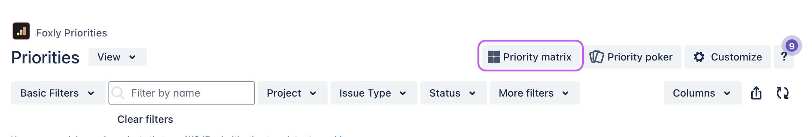
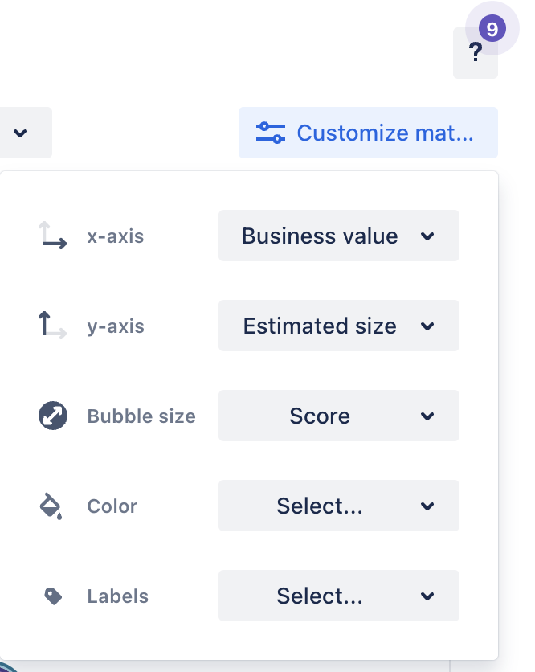
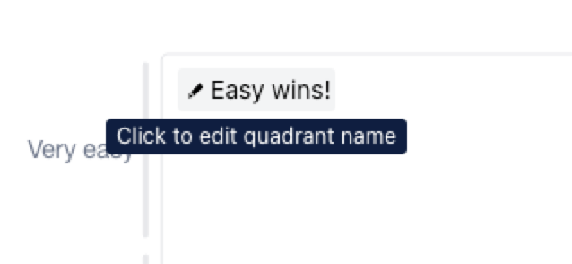
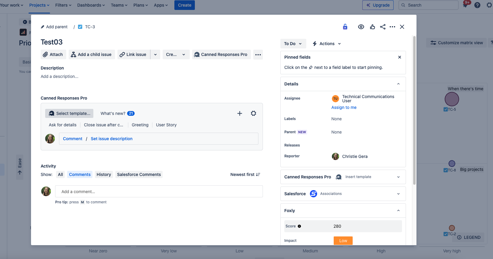
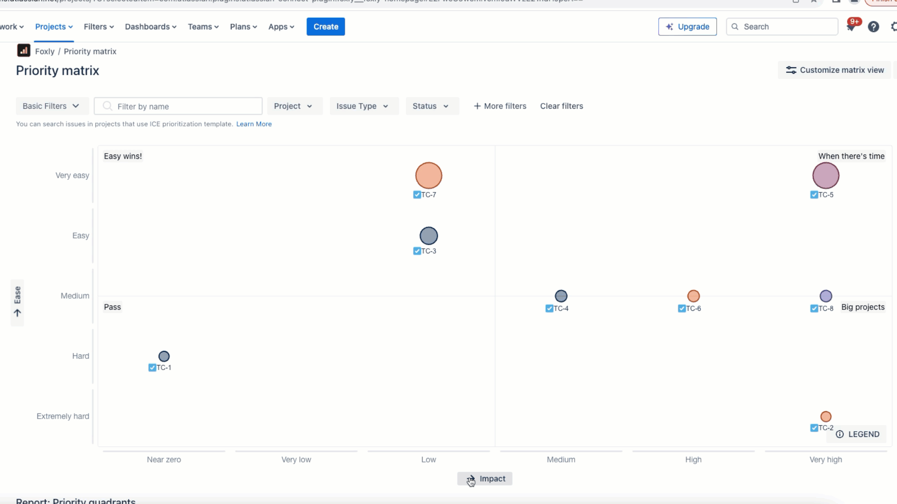
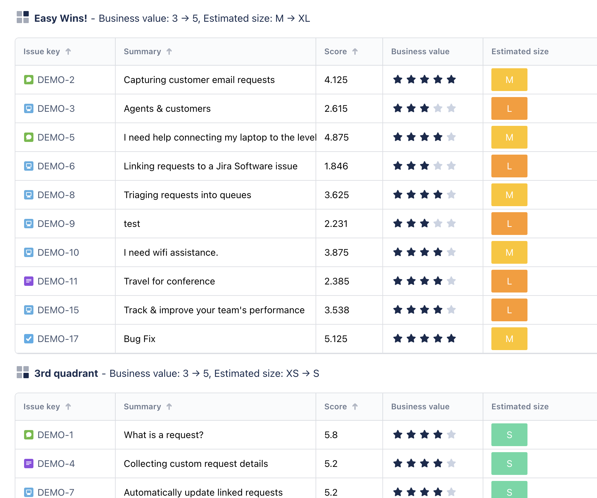
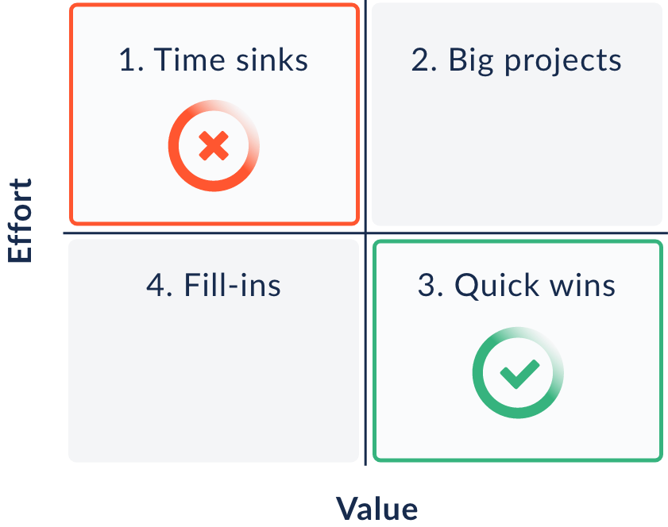

Work with the Priority Matrix
The Priority Matrix is a tool that helps you visualize and split issues into different Priority quadrants.
Access the Priority matrix
From the project menu, click Priority matrix.

Customize matrix view
The Priority Matrix chart renders automatically on the page, but you can customize the view.
Click Customize matrix view to see the options.
Field | Options | Description |
|---|---|---|
x-axis |
| You can change the values of the x- and y-axis, and also what characteristic determines bubble size. |
Color |
| You change what field sets the color groups. Click Legend in the bottom-right to see what’s what. |
Label |
| This turns the issue key label on or off. |

Edit quadrant name
To edit the quadrant name, click the name and enter the new quadrant name.

Open issue
Click any issue in the priority matrix to open that issue. If there is more than one issue on a bubble, clicking it will open all tickets for that bubble.

Flip the x- and y-axis
To flip the x- and y-axis values, click the axis label.

There is also a list view of priority quadrants available below the Priority chart.

The meaning of quadrants changes depending on the metrics you use. Here is an example of a priority matrix using Value and Effort metrics.

For example, by using Value related metrics on X-axes and Effort related metrics on Y-axes, you can define these four Priority quadrants:
Time sinks: These tasks take too long to complete, and the value isn't that big. Leave them as last or skip them altogether.
Big projects: These will bring huge value, but they usually require more time and resources. Plan for them properly.
Quick wins: Do these first to bring value and see results quickly! You'll get big value for the lowest effort.
Fill-ins: Do these in your spare time. They won't require too much time, so you can do them while you're waiting in between tasks.